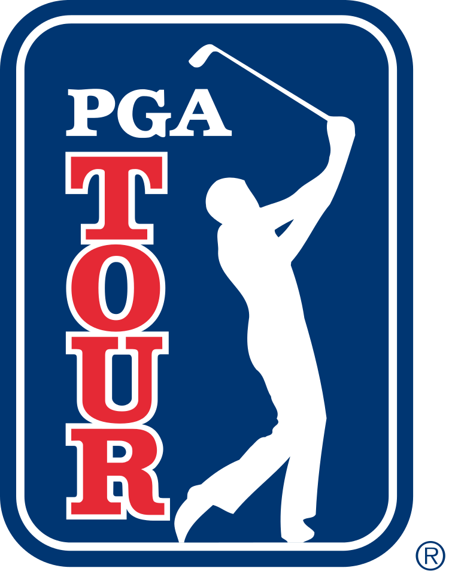
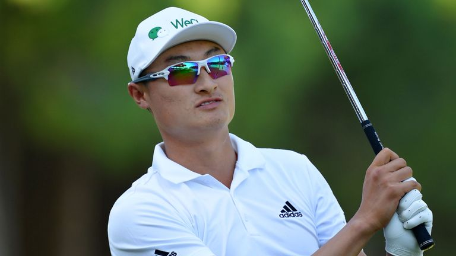

 When Haotong Li was called for a new, unusual penalty on the final green of this weekend's Dubai Desert Classic, it cost him around $100,000. It also drew the outrage of many of his compatriots. "Hard to believe @haotong_li has been penalised for this," tweeted fellow European Tour pro Eddie Pepperell, after Li was called for violating the new Golf rule of having his caddie line him up, despite marginal evidence. "Frankly, I think it's a shockingly bad decision and for the life of me I cannot see how Mike has lined up Haotong here."
"Don't understand what's the point or how can you say he's helping him align, he's clearly reading the putt," added Francesco Molinari. "Make things more complicated than before for what??"
Pepperell and Molinari were hardly the only players to rush to the defense of the 23-year-old, who was playing in the final group with Bryson DeChambeau and sat T3 before the ruling. Ross Fisher called the ruling "a disgrace." Graeme McDowell said he saw "no evidence" of the penalty in question. Paul McGinley urged that the player be given the benefit of the doubt. Lee Westwood added it was "a bit harsh." Nick Dougherty chimed in his support as well.
Under the new Golf rule, 10.2b(4), caddies are forbidden from standing behind their players to aid in alignment. Although Li's caddie appeared to be helping read the putt rather than line Li up, a rules official deemed him in violation of the rule, which led to the two-stroke penalty.